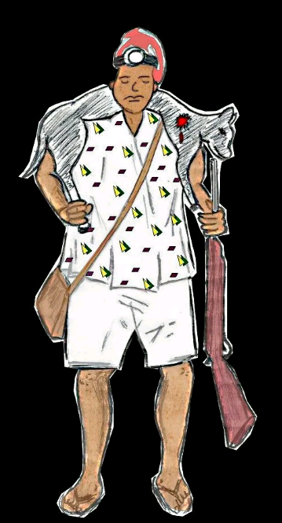

HISTORY OF ILERO
Ilero was founded in early 18th century by a man called Alawotan. Alawotan was a great hunter that used to move from place to place looking for animals to kill. Alawotan hailed from Ilaro, Ogun State. He moved to the old Ilero called "Ilero ahoro" through his professional effort in searching for animals. There was outbreak of war all over the land that made him returning back his home town Ilaro difficult. The man, Alawotan eventually settled on the top of a gigantic mountainous rock (òkè -Ila) which was recognized as "Ilero ahoro" till date for his normal business. 
One day, he woke up and saw some people around his settlement because they observed bails of smoke coming from his camp. His initial thought was they might be warrior coming to attack him, but moving closer to him, he realized that they were people that ran for there lives from Ila Orangun due to the war. He received them and protected them for many years. As time went on they began to increase in numbers. This great hunter called Alawotan now realized that as they were paying respect to him he would not be able to do his work again if he made him king. He then consulted Ifa Oracle who selected among people from Ila Orangun as head of the settlement. The Oracle also told him that, that place would not accommodate them in future because more people would still come. It means the town would be flooded by new others in future (ILU ERO). It was this ERO that was shortened to Ilero. As the Oracle predicted, in no distance time, people started trooping to the town called Ile-ero. Many people from Iwere Ile, Ìlàjì Ilé and Ayetoro ilé came to settle on the little piece of land that was suitable for living and Farming on top of the rock in searching for peace and protection.
The factor of searching for peace and protection astrologically increased the population comprising indigenes and immigrants led to resettlement on the present land called Ilero. The search for better place to settle took them as far as Agunrege, Igbadi Mountain was the terminal and still the significant structure now to be mentioned. All these happened during the reign of Elero Ayoola. There were twelve Elero before Elero Ayoola.
| 1 | Abere the first Elero from Ila Orangun |
| 2 | Lajolu Ige |
| 3 | Lajolu Abere |
| 4 | Mokalade Alao |
| 5 | Anretiola |
| 6 | Falohun Alao |
| 7 | Labiyi |
| 8 | Majaro |
| 9 | Abiola Isola |
| 10 | Akintayo Abere |
| 11 | Tinuade Akanmu |
| 12 | Ojerinde Alabi |
Their first night at Ilero was sweet because they had another twins that night. Elero Ayoola made a lot of sacrifices to protect the town from the attack of enemies, such that, anybody that came to attack them would not see there way until the devilish plan was jettisoned and turned back. Elero Ayoola died and Elero Olayanju Akanbi ascended the throne (exact date not established) Oba Olayanju lived for many years on the throne before he died. After the death of Olayanju Akanbi, came oba Solomon Adedokun Ajayi V as the Elero. His reign brought a lot of development to the town, in terms of education, economic and soco-cultural advancements. Oba Solomon Ajayi Olabiyi died in 2017 and his death brought Ilero to the installation of new Elero of Ilero, oba Wasiu Oyedele Saka Ige Onisa Olokolonigi II on 24th July 2018.
LIST OF FIRST SETTLERS
These are the foremost settlers at the initial stages- Oba Ayoola
- Sobaloju
- Jagun
- Olukotun
- Olukosin
- Mogaji
- Ajeji
- Ago Oke'lero
- Oluketu
- Ago Ipapo
- Agbedeyi
- Abioye Olaitan
- Saka
- Egbearole
The people of Ilero were and still are being governed by indirect rule. This implies that each ward is governed by Elero through the traditional chiefs of the various communities. The story of religious practice in the community started experiencing convert into Christians and Islam in early 19th century with advents of Western and Arabic education, hence there are many Christians and Muslims in the community than the Idol worshippers. The first church was first Baptist church established under the leadership of pastor Aiki. But now there are many churches in Ilero.
The first ultra modern mosque was built and commission late 1980. The first Imam was chief Imam
Itasan from òkè onire, Ilero. Ilero can boast of many mosques today.
Economic activities in the community are moving round farming such as cashew, cassava, yam as
the major occupation. Other complementary business , are clay pot moulding, weaving,
blacksmithing and other small scale businesses.

CULTURAL HERITAGE
Cultural heritage of the community include talking drum, bembe, agogo Ifa bàtá, sekere, gangan and apala. Expertise uses are usually experienced during festivals and socio functions. These are some of the cultural heritage of the town ; Oro festival, egungun festival, Sango, Ifá and Odekunmodo. The community is the second largest in population within the old Kajola local government and the foremost in the present geographical and administrative classification by virtue of being the headquarters of IWA Local Council Development Area.There are many groups in the community, they include Hausa, Fulani, Igbo, Togolese and Beneois. All of the tribal groups are facilitating economic activities of the community through farming, trading and mining activities. Physical and natural features of the community include large expanse of arable lands which are also good for cash crops. Landscape features within the town and or within range of the community are the following Rocky mountains cascading into beautiful ravines and valleys like oke Aṣọdẹ, òkè Ijeji, òkè Eleyele, odò Jalugbe, Akoko River, Ipogun River, Oriki River and river Oyan.
EDUCATIONAL INSTITUTIONS
The first primary school in the community was established in 1935. Then it was called school Apata but now first Baptist school, Gbelekale Ilero. Besides the community can boast of eleven public primary schools and three public secondary schools up till date of writing this website.
TRADITIONAL TITLE HOLDER
These are the traditional titles in the town ; Jagun, Sobaloju, Olukotun Oluketu, Mogaji, Ago Ipapo Olukosin, Ago Oke’lero. Ilero is sharing boundaries with Iganna, baba Ode, Gbojaye, Out, Baasi, Ipapo, Okeho, Iwere òkè and Ilaji oke. The first man that built a house with iron roofing sheets was Pa. Taiwo Apo from Abanti Compound, Gbelekale, Ilero while the first storey building was built by Pa. David and Pa. Emmanuel Oladimeji Oyedokun from idofin area. The first motor was bought by Pa. Yusuff Adegbola Gbelekale area in Ilero. The first man that bagged B.A was Pa. P.F Afolabi. He came from Falohun compound, Isegii area of Ilero..EXCOS OF IREPODUN ỌMỌ ILERO
(as at time writing this article)| 1 | Chairman | Alh. Ganiyu Amuda |
| 2 | Vice chairman | Mr. Tunde Odebode |
| 3 | Secretory | Mr. Paul Ajibade |
| 4 | P. R. O | Mr Folarin Adeleke |
| 5 | Fín. Secretary | Mr. Shittu Isiaka |
| 6 | Treasurer | Hon. Fatai Fasasi Ateere |
| 7 | Member | Mr. Waheed Motolase |
| 8 | Member | Chief Ojeleke |
| 9 | Member | Alh. Musa Azeez |
| 10 | Member | Com. S. G Gbolahan |
| 11 | Ex-off | Pa. S. Ó Oyinlola |
ILERO ANTHEM
Ilu Ilero to gbalejo to tún gbà onílé
Ilu mi, Ilu Olókìkí, ìlú Ayo taa bí mi
Ma a sa gbogbo ipá mi láti gbé Ilero ga
Ẹyin ọmọ Ilero, ẹ jẹ ká sọ pẹ fún ‘le tó san fún wàrà
Tó tún tẹjú, Ilero ẹ gbé e ga o
Ẹṣin tàbí òsèlú kò gbọ́dọ̀ tú wá ká
Ká fọwọ́ sọ wọ́pọ̀, ká féràn ara wa
Ilẹ̀ tó dára.
EULOGY OF ILERO
Elero sọpe
Ọmọ Abere Ọmọ okinni
ọmọ ilé gbomo
omo odede kò gbà ẹrú
Elero dúdú àbí lagba
Ọmọ olórí tíì jọba ní titun
Ọmọ abẹ joyè ero
Elero lomo paa, okankan
La dúró sí
Ara oko ni rogun salo
Ọmọ Ayoola Alabi
Elero sope.